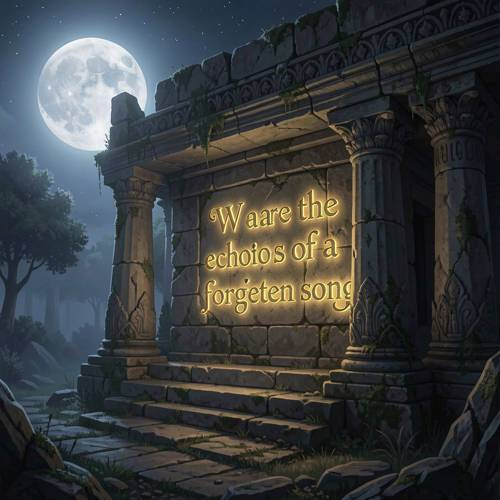
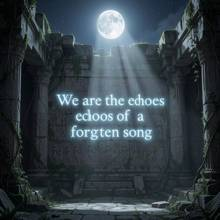
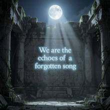

Text Generation — A forgotten ancient temple has a mysterious English inscription "We ar
A forgotten ancient temple has a mysterious English inscription "We are the echoes of a forgotten song" engraved on the wall, which glows in the moonlight.

Direct — one call, no iterationContinuum — Qwen3.8-27B + FLUX.2-klein-9B
Judge — Direct
FAILText Generation — The image displays text on the temple wall, but it is misspelled. The text reads 'Waare the echoios of a forgeten song' instead of the prompted 'We are the echoes of a forgotten song'. Specifically, 'We are' is written as 'Waare', 'echoes' is misspelled as 'echoios', and 'forgotten' is misspelled as 'forgeten'.
PASSGrammar - Pronoun Reference — The prompt states that the inscription 'which glows in the moonlight'. In the image, the inscription is indeed glowing with a yellow light. The scene is set at night with a large moon in the sky, providing moonlight that illuminates the ancient temple. The image correctly depicts the inscription as the object that is glowing.
Judge — Continuum
PASSText Generation — The image displays the English text "We are the echoes of a forgotten song" on a stone wall. The text is rendered accurately without any spelling errors, omissions, or extra words.
PASSGrammar - Pronoun Reference — The prompt states that the inscription 'which glows in the moonlight'. In the image, the inscription itself is depicted as glowing with a blue light. This visual element correctly corresponds to the pronoun 'which' referring to the inscription.
What the agent did
Thinking
The user wants an image: an ancient abandoned temple, on the wall a mysterious English inscription "We are the echoes of a forgotten song" engraved, and in the moonlight it glows. Need to generate with flux2-klein, inspect it (especially the text — need to verify spelling with inspect_region), edit if necessary, mark the best, and confirm the mark at the end. Plan: 1. generate_image with model flux2-klein, prompt describing the scene: an abandoned ancient temple, moonlight, on the stone wall a glowing English inscription "We are the echoes of a forgotten song" engraved, mystical atmosphere. 2. Use inspect_region to check the text area and read the characters. 3. If the text is wrong, edit with edit_image naming the wrong and correct strings. 4. mark_best early and at the end. Let me write a good generation prompt. Text rendering is a key challenge — klein is good at prompt adherence but long text is hard. Let's include the exact phrase in quotes in the prompt. Prompt: "Ancient abandoned temple at night, massive weathered stone walls under a full moon, mystical glowing white-blue light emanating from an engraved English inscription on the wall reading "We are the echoes of a forgotten song", carved letters in archaic script style, moonbeams, moss and vines, dramatic moonlight, cinematic, mysterious atmosphere" Size: default 1024x1024? Landscape might be better for the temple scene — but the instructions say size is fixed for comparison, and the seed and size are controlled by the harness... Actually it says "don't set a seed. Size and seed are controlled by the harness." Hmm, "controlled by the harness" — should I avoid overriding width/height? The default is 1024x1024. For a temple scene with wall text, 1024x1536 portrait might be better, but the note says size is controlled by the harness, so I'll use the default (1024). Actually I could set the size, but the note says the harness controls it, suggesting I shouldn't. I'll go with the default. Let's generate.
Step 1 — `generate_image`
{
"model": "flux2-klein",
"prompt": "A forgotten ancient temple at night under a full moon, massive weathered stone walls carved with archaic reliefs, moss, vines and broken columns, a dramatic beam of moonlight falling across the central wall where a glowing engraved English inscription shines in luminous pale blue-white light: \"We are the echoes of a forgotten song\" \u2014 the words are clearly carved into the stone and glow softly, mystical and mysterious atmosphere, cinematic moonlit scene, fine detail"
}
Result img_0

Thinking
The image is really good. The scene matches: a forgotten ancient temple, full moon, light beams, a glowing inscription on the wall. However, there's a typo in the text: "ecloos of a forgteng song" — the 2nd line shows "ecloos" (a duplication issue: "We are the echoes / ecloos of a / forgteng song"). Let me zoom in to verify. Let's use inspect_region to check the text area.
Model
The scene is strong, but the inscription looks garbled on lines 2–3. Let me zoom in to verify the text precisely.
Step 2 — `inspect_region`
{
"image": "img_0",
"roi": [
"We are the echoes",
"the glowing inscription text on the wall"
]
}
Thinking
The roi needs to be either a single string (a text description) or a list of numeric values. Let's pass it as a string: "the glowing inscription text on the wall".
Step 3 — `inspect_region`
{
"image": "img_0",
"roi": "the glowing engraved inscription text on the central wall",
"padding": 0.15
}
Thinking
SAM didn't match the text. Let's use a rectangle. The text region within the 1024x1024 image: roughly x is from 230 to 790, y is from 410 to 660. Let's pass it as [230, 400, 800, 670].
Confirmed: the text reads "We are the echoes / ecloos of a / forgteng song". Line 2 should be "echoes of a" but it displays as "ecloos of a" (with "echoes" duplicated on line 1), and line 3's "forgotten" is displayed as "forgteng". Need to fix the text. Best approach: use edit_image with a prompt that explicitly states the incorrect string and the correct string, and instructs to correct the entire inscription to exactly "We are the echoes of a forgotten song". The text is glowing white on the stone. According to the guidance: "For text in particular: name the incorrect string and the correct string. Do not re-describe the other parts of the scene, or it will drift." So the prompt would be something like: "Fix the glowing inscription: replace the miswritten text 'ecloos of a forgteng song' with the correct spelling so the whole inscription reads exactly 'We are the echoes of a forgotten song' across three lines: 'We are the echoes' / 'of a forgotten' / 'song'". Hmm — the line breaks might be an issue. Actually, the current line breaks are: "We are the echoes" / "ecloos of a" / "forgteng song". If we fix the duplication, the natural 3 lines would be: "We are the" / "echoes of a" / "forgotten song". The first line currently has 3 words. Simpler: instruct to re-render the glowing inscription so it reads exactly "We are the echoes of a forgotten song" in correct English spelling, maintaining the same glowing style. Specify the correct words to fix: "ecloos" → "echoes", "forgteng" → "forgotten". edit_image with model flux2-klein. Let's write the prompt: "The glowing inscription on the stone wall has typos. Fix it so the text reads exactly: We are the echoes of a forgotten song. Correct the garbled word 'ecloos' to 'echoes' and 'forgteng' to 'forgotten'. Keep the same glowing pale blue lettering on the stone wall, same size and position." This is a delta-style prompt. Good. But there's also the duplication problem: line 1 "We are the echoes" + line 2 "ecloos of a" — once fixed it becomes "We are the echoes / echoes of a / forgotten song", which is a duplication of "echoes". Better to instruct a full rewrite of the inscription with the exact full sentence, specifying the layout: 3 lines: "We are the echoes" / "of a forgotten" / "song"? That doesn't flow well either. The cleanest is: the whole sentence "We are the echoes of a forgotten song" — 9 words. In 3 lines of about 3 words each: "We are the" / "echoes of a" / "forgotten song". So the prompt: "Rewrite the glowing inscription on the wall so it reads exactly 'We are the echoes of a forgotten song' in three lines: 'We are the', 'echoes of a', 'forgotten song'. The current text has typos ('ecloos', 'forgteng') and a duplicated word; fix the spelling so every word is correct English. Keep the same glowing pale blue engraved lettering, same font, size and position." This is explicit. Let's run it with model flux2-klein.
Model
Confirmed the typos: the second line is "ecloos of a" (a duplicated, misspelled "echoes"), and the third line is "forgteng song." I'll make targeted text fixes.
Step 5 — `edit_image`
{
"image": "img_0",
"model": "flux2-klein",
"prompt": "Fix the glowing inscription on the stone wall so it reads exactly: We are the echoes of a forgotten song. The current text has misspellings and a duplicated word: \"ecloos\" must become \"echoes\" and \"forgteng\" must become \"forgotten\", with no duplicated words. Arrange it in three centered lines: \"We are the\" / \"echoes of a\" / \"forgotten song\". Keep the same glowing pale blue engraved lettering, same font, size and position on the wall."
}
Result img_2

Thinking
In the full image, it looks correct: "We are the / echoes of a / forgotten song". To check for subtle glyph errors, I'll zoom in on the text to verify (e.g., "forgotten" vs. "forgottcn", etc.).
Model
Looks correct at full scale. Verifying the letters by zooming into the inscription.
Text in the cropped image: Line 1: "We are the" — correct. Line 2: "echoes of a" — "echoes" — e-c-h-o-e-s: yes, reads as "echoes". "of a" is also correct. Line 3: "forgotten song" — f-o-r-g-o-t-t-e-n: reads as "forgotten". "song" is also correct. All correct: "We are the echoes of a forgotten song". The scene matches: an abandoned ancient temple, a full moon, a beam of moonlight, glowing inscriptions, moss, vines, relief carvings. This is a great result. I'll mark img_2 as the best and check the mark (since this is the last action, marking now will make the marked image the final one).
Step 7 — `mark_best`
{
"image": "img_2",
"reason": "Scene matches the prompt fully: forgotten ancient temple, full moon with moonbeam, moss/vines, and the glowing moonlit inscription now reads exactly \"We are the echoes of a forgotten song\" \u2014 verified letter-by-letter via zoomed crop."
}
Thinking
Mark confirmed — img_2 is the marked best, and this is the latest image as well. Done. Let me summarize.
Model
Done. The image is complete and verified: - **Forgotten ancient temple** — weathered stone walls with archaic figure reliefs, broken columns, moss, and creeping vines - **Moonlight** — a full moon overhead casting a dramatic beam down onto the central wall - **Inscription** — "We are the echoes of a forgotten song" engraved in the stone, glowing pale blue-white in the moonlight The first draft had garbled text ("ecloos… forgteng song"), so I corrected it with a targeted edit and confirmed the final spelling letter-by-letter with a zoomed crop. The best result is marked and ready to return.